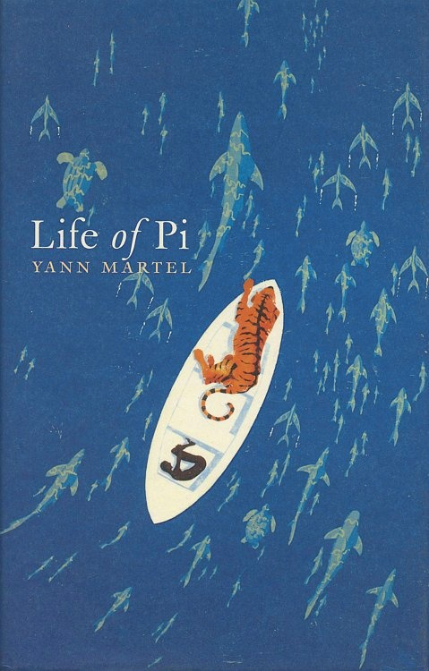
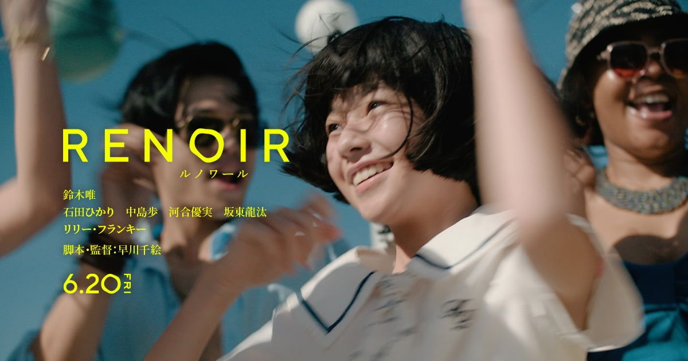
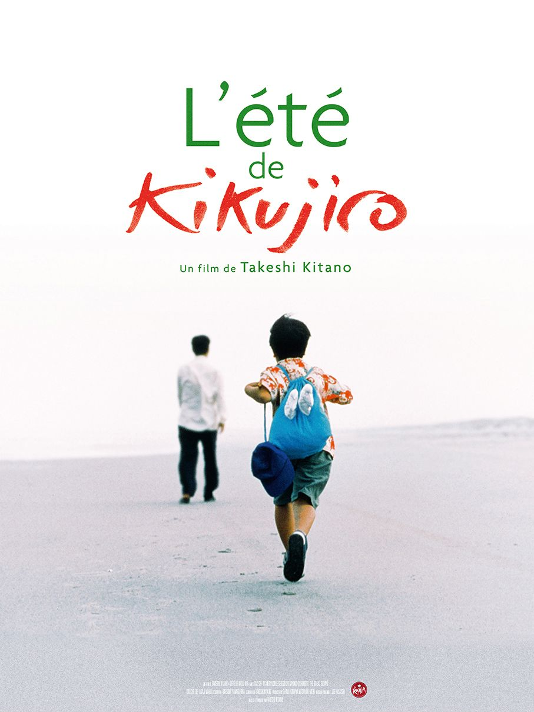
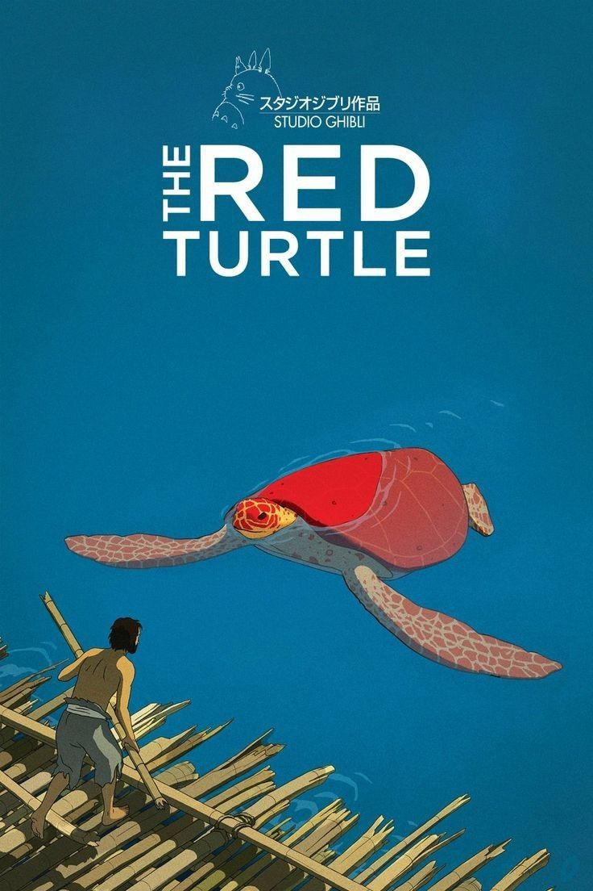
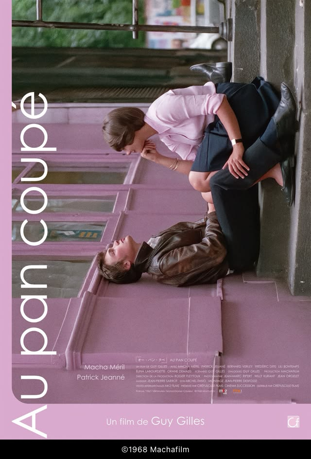
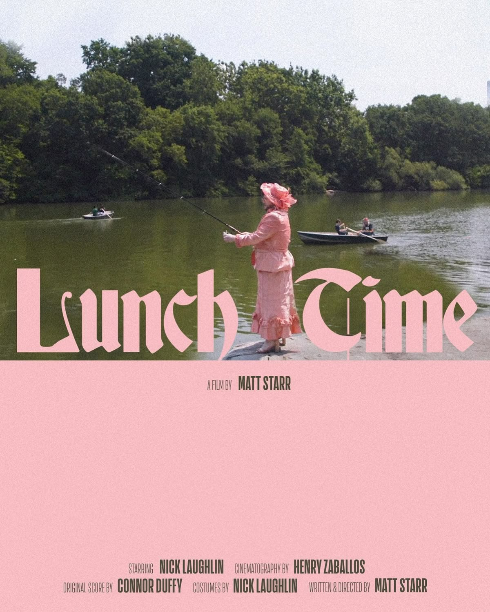
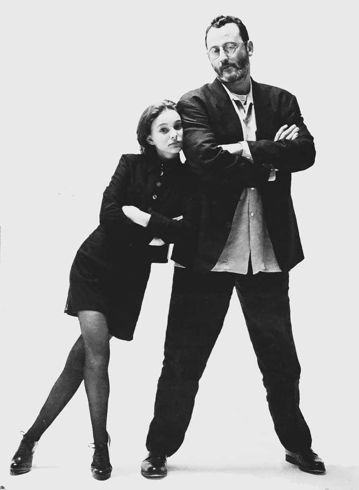

Films pour les rêveurs
Life of Pi · The Red Turtle · Blue
Collection à l'honneur
Une sélection de films, de souvenirs et de voyages.
Quiet Frames est un mini-site consacré aux films qui laissent une trace : des récits de départ, de retour, d'enfance et de lumière.
Ressource cinéma : Rotten Tomatoes

Découvrir la collection →
Life of Pi · The Red Turtle · Blue

Kikujiro · Kids Return · KIDDO

Des voyages qui commencent par un départ.

Histoires de mémoire, de retrouvailles et de retour.

Après-midi ensoleillés, longues routes et étés inoubliables.

Des films qui restent en nous bien après le générique.
« Le cadre n'est pas une frontière, mais une fenêtre ouverte sur un monde qui n'existe que le temps qu'un rayon de lumière touche l'écran. »
— Quiet Frames